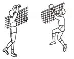
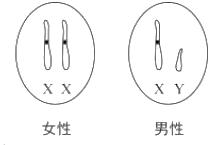

2018年北京市中考生物试题 · 选择题 第6、7、8、9、10题
6. 球迷观赛时，看到精彩瞬间会激动得欢呼雀跃。对球迷这种反应的分析不正确的是
A. 这种反应过程属于反射
B 这种反应过程不需要大脑皮层参与
这种反应过程不需要大脑皮层参与
C. 眼和耳是感受刺激的主要器官
D. 骨骼肌是产生动作的效应器
7. 排球运动员在比赛中需完成手腕屈和伸等动作，关于这些动作的分析不正确的是

A. 在神经系统调节下完成
B 由一块骨骼肌收缩完成
C. 由骨骼肌牵引骨绕关节活动完成
D. 体现了关节的牢固和灵活
8. 深圳的国家基因库中，储存有不同生物的基因样本超过1000万份。下列叙述不正确的是
A. 基因是有遗传效应的DNA片段B. 基因可以在亲子代之间传递
C. 基因库中储存的基因都相同D. 建立基因库利于保护生物多样性
9. 下图是人体细胞中性染色体组成示意图，下列叙述不正确的是

A. 男性产生含X或Y染色体的精子
B. 女性产生含X染色体的卵细胞
C. 新生儿的性别仅由母亲决定
D. 新生儿的性别比例接近1：1
10. 我国科学家利用神舟飞船搭载实验。选育出辣椒新品种“航椒II号”，与普通辣椒相比增产约27%，高产性状的产生源于（ ）
A. 生物的遗传B. 生物的变异C. 生物的生长D. 生物的发育